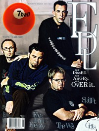

Every Day Life
|  |
| January 2000 7ball |
 |
| July 2001 HM |
Media coverage:
- Dec 1995 in HM "Fresh Produce", by Chris Callaway
- Sum 1996 in Garlic Press "Interview: Every Day Life"
- Jul 1996 in 7ball "Bankshots: Every Day Life", by Dan MacIntosh
- Sep 1997 in 7ball "Righteous Anger", by Bruce A. Brown
- Nov 1997 in HM "Grover Meets EDL's Tedd Cookersey", by Shaun Groves
- Sep 1999 in HM "Raising The American Standard", by Karen Vasey
- Jan 2000 in 7ball "We Can't Be Angry Forever", by Treble Bandoppler
- Jul 2001 in HM "Forgotten Thoughts of Our Tomorrow", by David M Pogge
Albums & reviews:
1996: Disgruntled
- May 1996 in 7ball, by Don Neely
- Jul 1996 in HM, by Doug Van Pelt
- Jul 1997 in 7ball, by Chris Well
- Fall 1997 in Garlic Press
- Nov 1997 in CBA Marketplace, by Gary Hassig
- Nov 1997 in HM, by Brian Vincent McGovern
- Jan 1998 in YouthWorker, by Garth Heckman
- 1998 in Cornerstone, by David Canfield
- May 1999 in 7ball, by David A. Jenison
- Nov 1999 in HM, by Doug Van Pelt
- Jan 2000 in YouthWorker, by Dave Urbanski
- Jul 2001 in HM, by Melba Jackson
Award Summary (Nominations / Wins)
Dove Awards- 1999 Dove Awards
- Hard Music Recorded Song: "Salt Circles"
Books about Every Day Life
- "Every Day Life (a.k.a. EDL)" in The Encyclopedia of Contemporary Christian Music (Mark Allan Powell, 2002)

© 2011 CMnexus. Last updated September 2019. Contact: editor -AT- cmnexus -DØT- org About